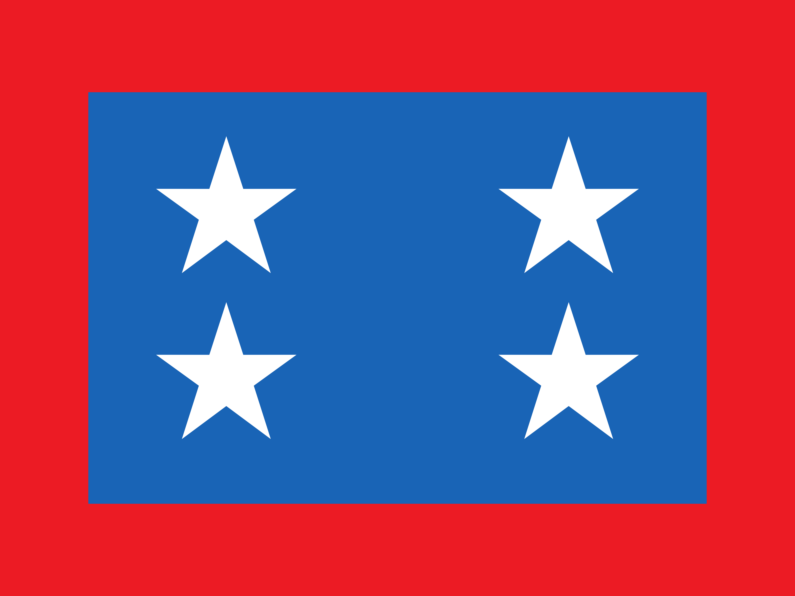

Nuestra Historia
77 años de servicio voluntario a la comunidad de Casablanca.
Línea de Tiempo
1949
Fundación del Cuerpo de Bomberos de Casablanca, el 22 de abril de 1949, junto a la Primera Compañía.
17 de julio de 1984
Fundación de la Segunda Compañía, con el lema "Constancia y Disciplina".
4 de mayo de 1996
Fundación de la Tercera Compañía en el sector de Quintay, establecida inicialmente como Brigada Costera.
28 de enero de 2000
Fundación de la Cuarta Compañía, "Hachas y Escalas", especializada en rescate.
2021
Fundación de la Brigada Las Dichas, Brigada Contra Incendios, con el lema "Servir con Corazón y Razón".
21 de julio de 2025
El Grupo Forestal (EBF), integrado por bomberos de las 4 compañías, logra la Acreditación Forestal nivel mediano de Bomberos de Chile, siendo el noveno Cuerpo del país en alcanzarla.
Hoy
El Cuerpo de Bomberos de Casablanca cuenta con 4 compañías y las Brigadas Las Dichas y Lagunillas al servicio de la comuna.
Bandera Institucional
